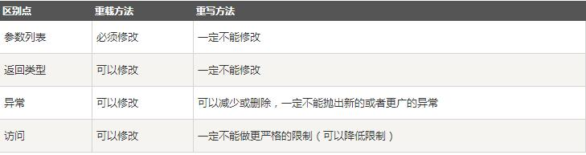
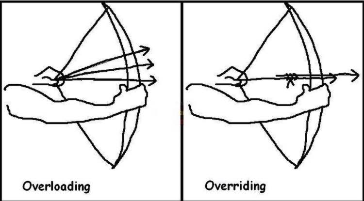

整理下重载和重写的特点
重写(Override)
重写是子类对父类的允许访问的方法的实现过程进行重新编写, 返回值和形参都不能改变。即外壳不变，核心重写！
重写的好处在于子类可以根据需要，定义特定于自己的行为。 也就是说子类能够根据需要实现父类的方法。
重写方法不能抛出新的检查异常或者比被重写方法申明更加宽泛的异常。例如： 父类的一个方法申明了一个检查异常 IOException，但是在重写这个方法的时候不能抛出 Exception 异常，因为 Exception 是 IOException 的父类，只能抛出 IOException 的子类异常。
在面向对象原则里，重写意味着可以重写任何现有方法。
实例如下：
1 | TestDog.java 文件代码： |
以上实例编译运行结果如下：
1 | 动物可以移动 |
在上面的例子中可以看到，尽管b属于Animal类型，但是它运行的是Dog类的move方法。
这是由于在编译阶段，只是检查参数的引用类型。
然而在运行时，Java虚拟机(JVM)指定对象的类型并且运行该对象的方法。
因此在上面的例子中，之所以能编译成功，是因为Animal类中存在move方法，然而运行时，运行的是特定对象的方法。
思考以下例子：
1 | TestDog.java 文件代码： |
以上实例编译运行结果如下：
1 | TestDog.java:30: cannot find symbol |
该程序将抛出一个编译错误，因为b的引用类型Animal没有bark方法。
方法的重写规则
参数列表必须完全与被重写方法的相同；
返回类型必须完全与被重写方法的返回类型相同；
访问权限不能比父类中被重写的方法的访问权限更低。例如：如果父类的一个方法被声明为public，那么在子类中重写该方法就不能声明为protected。
父类的成员方法只能被它的子类重写。
声明为final的方法不能被重写。
声明为static的方法不能被重写，但是能够被再次声明。
子类和父类在同一个包中，那么子类可以重写父类所有方法，除了声明为private和final的方法。
子类和父类不在同一个包中，那么子类只能够重写父类的声明为public和protected的非final方法。
重写的方法能够抛出任何非强制异常，无论被重写的方法是否抛出异常。但是，重写的方法不能抛出新的强制性异常，或者比被重写方法声明的更广泛的强制性异常，反之则可以。
构造方法不能被重写。
如果不能继承一个方法，则不能重写这个方法。
Super关键字的使用
当需要在子类中调用父类的被重写方法时，要使用super关键字。
1 | TestDog.java 文件代码： |
以上实例编译运行结果如下：
1 | 动物可以移动 |
重载(Overload)
重载(overloading) 是在一个类里面，方法名字相同，而参数不同。返回类型可以相同也可以不同。
每个重载的方法（或者构造函数）都必须有一个独一无二的参数类型列表。
最常用的地方就是构造器的重载。
重载规则:
被重载的方法必须改变参数列表(参数个数或类型不一样)；
被重载的方法可以改变返回类型；
被重载的方法可以改变访问修饰符；
被重载的方法可以声明新的或更广的检查异常；
方法能够在同一个类中或者在一个子类中被重载。
无法以返回值类型作为重载函数的区分标准。
1 | Overloading.java 文件代码： |
重写与重载之间的区别

总结
方法的重写(Overriding)和重载(Overloading)是java多态性的不同表现，重写是父类与子类之间多态性的一种表现，重载可以理解成多态的具体表现形式。
(1)方法重载是一个类中定义了多个方法名相同,而他们的参数的数量不同或数量相同而类型和次序不同,则称为方法的重载(Overloading)。
(2)方法重写是在子类存在方法与父类的方法的名字相同,而且参数的个数与类型一样,返回值也一样的方法,就称为重写(Overriding)。
(3)方法重载是一个类的多态性表现,而方法重写是子类与父类的一种多态性表现。


谢谢观看~